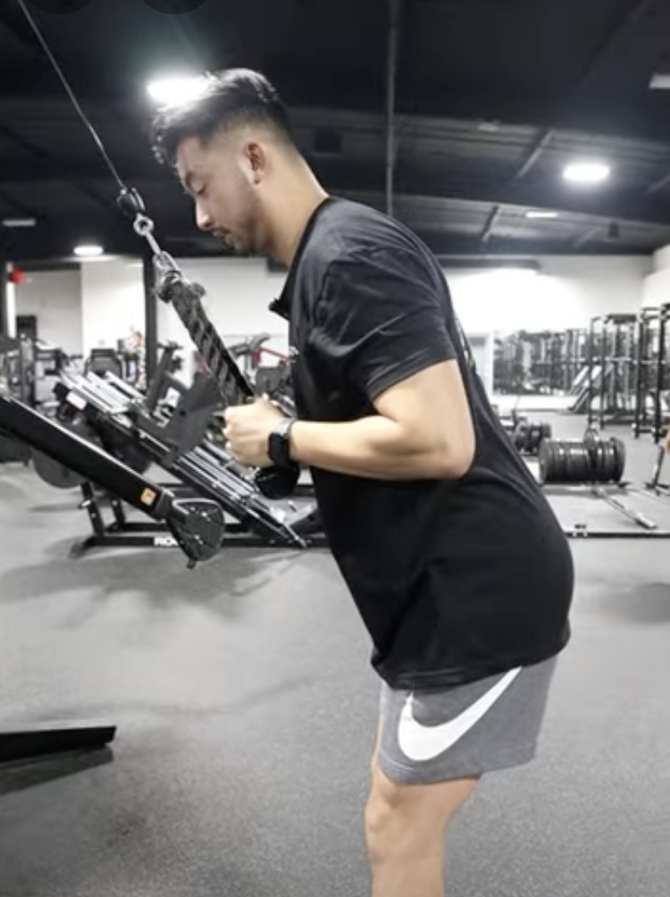

Premiere exercises
Ankle and hamstring stretch
Experiment with straight and bent legs bent knees will bring the stretch more to the lower back, straight legs more in the hamstrings.
Bicept curls
This exercise is an eccentric contraction exercise for the elbow flexors. You may use a dumbbell, kettlebell, cable pulley, or strength band for this exercise. Before starting, be sure to keep the elbow directly below the shoulder, and shoulder blade retracted and depressed. Start by using your free hand to help raise the weight to the top position. Slowly lower the weight while resisting the downward acceleration. Complete the downward movement at a 5 second tempo.
Tricept extensions
Point your upper arm toward the ceiling, with your elbow bent to 90 degrees. Slowly straighten the elbow, moving the weight upward. Then slowly lower the weight to the starting position. You'll feel tension in the muscles in the back of your upper arm.